건축기사 (2020-08-22 기출문제)
1과목: 건축계획
1. 극장의 평면형식에 관한 설명으로 옳지 않은 것은?
- 애리너형에서 무대 배경은 주로 낮은 가구로 구성된다.
- 프로시니엄형은 픽쳐 프레임 스테이지형이라고도 불리운다.
- 오픈 스테이지형은 관객석이 무대의 대부분을 둘러싸고 있는 형식이다.
- 프로시니엄형은 가까운 거리에서 관람하게 되며, 가장 많은 관객을 수용할 수 있다.
(정답률: 87%)

2. 주택의 평면과 각 부위의 치수 및 기준척도에 관한 설명으로 옳지 않은 것은?
- 치수 및 기준척도는 안목치수를 원칙으로 한다.
- 거실 및 침실의 평면 각 변의 길이는 10cm를 단위로 한 것을 기준척도로 한다.
- 거실 및 침실의 층높이는 2.4m 이상으로 하되, 5cm를 단위로 한 것을 기준척도로 한다.
- 계단 및 계단참의 평면 각 변의 길이 또는 너비는 5cm를 단위로 한 것을 기준척도로 한다.
(정답률: 78%)
3. 종합병원의 외래진료부를 클로즈드 시스템(closed system)으로 계획할 경우 고려할 사항으로 가장 부적절한 것은?
- 1층에 두는 것이 좋다.
- 부속 진료시설을 인접하게 한다.
- 약국, 회계 등은 정면출입구 근처에 설치한다.
- 외과계통은 소진료실을 다수 설치하도록 한다.
(정답률: 81%)
4. 공장의 지붕형태에 관한 설명으로 옳은 것은?
- 솟음지붕은 채광 및 환기에 적합한 방법이다.
- 샤렌구조는 기둥이 많이 소요된다는 단점이 있다.
- 뾰족지붕은 직사광선이 완전히 차단된다는 장점이 있다.
- 톱날지붕은 남향으로 할 경우 하루 종일 변함없는 조도를 가진 약광선을 받아들일 수 있다.
(정답률: 64%)
5. 레드번(Radburn) 주택단지계획에 관한 설명으로 옳지 않은 것은?
- 중앙에는 대공원 설치를 계획하였다.
- 주거구는 슈퍼블록 단위로 계획하였다.
- 보행자의 보도와 차도를 분리하여 계획하였다.
- 주거지 내의 통과교통으로 간선도로를 계획하였다.
(정답률: 70%)
6. 공포형식 중 다포형식에 관한 설명으로 옳지 않은 것은?
- 출목은 2출목 이상으로 전개된다.
- 수덕사 대웅전이 대표적인 건물이다.
- 내부 천장구조는 대부분 우물천장이다.
- 기둥 상부 이외에 기둥 사이에도 공포를 배열한 형식이다.
(정답률: 53%)
7. 탑상형 공동주택에 관한 설명으로 옳지 않은 것은?
- 각 세대에 시각적인 개방감을 준다.
- 각 세대에 거주 조건 및 환경이 균등하다.
- 도심지 내의 랜드마크적인 역할이 가능하다.
- 건축물 외면의 4개의 입면성을 강조한 유형이다.
(정답률: 82%)
8. 학교의 운영방식에 관한 설명으로 옳지 않은 것은?
- 플래툰형은 교과교실형보다 학생의 이동이 많다.
- 종합교실형은 초등학교 저학년에 가장 권장할 만한 형식이다.
- 달톤형은 규모 및 시설이 다른 다양한 형태의 교실이 요구된다.
- 일반 및 특별교실형은 우리나라 중학교에서 일반적으로 사용되는 방식이다.
(정답률: 75%)
9. 사무소 건축에서 오피스 랜드스케이핑(office landscaping)에 관한 설명으로 옳지 않은 것은?
- 프라이버시 확보가 용이하여 업무의 효율성이 증대된다.
- 커뮤니케이션의 융통성이 있고 장애요인이 거의 없다.
- 실내에 고정된 칸막이를 설치하지 않으며 공간을 절약할 수 있다.
- 변화하는 작업의 패턴에 따라 조절이 가능하며 신속하고 경제적으로 대처할 수 있다.
(정답률: 84%)
10. 엘리베이터의 설계 시 고려사항으로 옳지 않은 것은?
- 군 관리운전의 경우 동일 군내의 서비스 층은 같게 한다.
- 승객의 층별 대기시간은 평균 운전간격 이하가 되게 한다.
- 건축물의 출입층이 2개 층이 되는 경우는 각각의 교통수요량 이상이 되도록 한다.
- 백화점과 같은 대규모 매장에는 일반적으로 승객수송의 70~80%를 분담하도록 계획한다.
(정답률: 80%)
11. 극장 건축과 관련된 용어 설명으로 옳지 않은 것은?
- 플라이 갤러리(fly gallery) : 무대 주위의 벽에 설치되는 좁은 통로이다.
- 사이클로라마(cyclorama) : 무대의 제일 뒤에 설치되는 무대 배경용 벽이다.
- 그린룸(green room) : 연기자가 분장 또는 화장을 하고 의상을 갈아입는 곳이다.
- 그리드 아이언(grid iron) : 무대 천장 밑에 설치한 것으로 배경이나 조명 기구 등이 매달린다.
(정답률: 71%)
12. 숑바르 드 로브의 주거면적으로 옳은 것은?
- 병리기준 : 6m2, 한계기준 : 12m2
- 병리기준 : 6m2, 한계기준 : 14m2
- 병리기준 : 8m2, 한계기준 : 12m2
- 병리기준 : 8m2, 한계기준 : 14m2
(정답률: 77%)
13. 미술관 전시실의 순회형식에 관한 설명으로 옳지 않은 것은?
- 연속순회형식은 전시 벽면이 최대화되고 공간절약 효과가 있다.
- 연속순회형식은 한 실을 폐쇄하면 다음 실로의 이동이 불가능하다.
- 갤러리 및 복도형식은 관람자가 전시실을 자유롭게 선택하여 관람할 수 있다.
- 중앙홀형식에서 중앙홀이 크면 장래의 확장에는 용이하나 동선의 혼잡이 심해진다.
(정답률: 82%)
14. 경복궁의 궁궐 배치는 전조공간과 후침공간으로 이루어져 있다. 다음 중 전조공간의 구성에 속하지 않는 것은?
- 근정전
- 만춘전
- 천추전
- 강녕전
(정답률: 65%)
15. 도서관 건축에 관한 설명으로 옳지 않은 것은?
- 캐럴(carrel)은 서고 내의 설치된 소연구실이다.
- 서고의 내부는 자연채광을 하지 않고 인공 조명을 사용한다.
- 일반 열람실의 면적은 0.25~0.5m2/인 정도의 규모로 계획한다.
- 서고면적 1m2 당 150~250권 정도의 수장능력을 갖도록 계획한다.
(정답률: 72%)
16. 호텔건축에 관한 설명을 옳지 않은 것은?
- 커머셜 호텔은 가급적 저층으로 한다.
- 아파트먼트 호텔은 장기 체류용 호텔이다.
- 리조트 호텔은 자연 경관이 좋은 곳을 선택한다.
- 터미널 호텔은 교통기관의 발착지점에 위치한다.
(정답률: 88%)
17. 공동주택 단위주거의 단면구성 형태에 관한 설명으로 옳지 않은 것은?
- 플랫형은 주거단위가 동일층에 한하여 구성되는 형식이다.
- 스킵 플로어형은 통로 및 공용면적이 적은 반면에 전체적으로 유효면적이 높다.
- 복층형(메조네트형)은 플랫형에 비해 엘리베이터의 정지 층수를 적게 할 수 있다.
- 트리플렉스형은 듀틀렉스형보다 프라이버시의 확보율이 낮고 통로면적이 많이 필요하다.
(정답률: 80%)
18. 다음 중 건축요소와 해당 건축요소가 사용된 건축양식의 연결이 옳지 않은 것은?
- 장미창(Rose Window) - 고딕
- 러스티케이션(Rustcation) - 르네상스
- 첨두아치(Poinred Arch) - 로마네스크
- 펜덴티브 돔(Pendentive Done) - 비잔틴
(정답률: 60%)
19. 은행건축계획에 관한 설명으로 옳지 않은 것은?
- 고객과 직원과의 동선이 중복되지 않도록 계획한다.
- 대규모 은행일 경우 고객의 출입구는 되도록 1개소로 계획한다.
- 이중문을 설치할 경우 바깥문은 바깥 여닫이 또는 자재문으로 계획한다.
- 어린이의 출입이 많은 경우에는 주출입구에 회전문을 설치하는 것이 좋다.
(정답률: 83%)
20. 다음 중 백화점 기둥간격의 결정요소와 가장 거리가 먼 것은?
- 지하 주차장의 주차방법
- 진열대의 치수와 배열법
- 엘리베이터의 배치 방법
- 각 층별 매장의 상품구성
(정답률: 79%)
2과목: 건축시공
21. 아래 그림의 형태를 가진 흙막이의 명칭은?
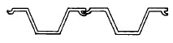
- H-말뚝 토류판
- 슬러리월
- 소일콘크리트 말뚝
- 시트파일
(정답률: 66%)
22. 다음 중 통계적 품질관리 기법의 종류에 해당되지 않는 것은?
- 히스토그램
- 특성요인도
- 브레인스토밍
- 파레토도
(정답률: 76%)
23. 도장공사에 필요한 가연성 도료를 보관하는 창고에 관한 설명으로 옳지 않은 것은?
- 독립한 단층건물로서 주위 건물에서 1.5m 이상 떨어져 있게 한다.
- 건물내의 일부를 도료의 저장장소로 이용할 때는 내화구조 또는 방화구조로 구획된 장소를 선택한다.
- 바닥에는 침투성이 없는 재료를 깐다.
- 지붕은 불연재로로 하고, 적정한 높이의 천장을 설치한다.
(정답률: 59%)
24. 철근콘크리트 구조물에서 철근 조립순서로 옳은 것은?
- 기초철근 → 기둥철근 → 보철근 → 슬래브철근 → 계단철근 → 벽철근
- 기초철근 → 기둥철근 → 벽철근 → 보철근 → 슬래브철근 → 계단철근
- 기초철근 → 벽철근 → 기둥철근 → 보철근 → 슬래브철근 → 계단철근
- 기초철근 → 벽철근 → 보철근 → 기둥철근 → 슬래브철근 → 계단철근
(정답률: 77%)
25. 건설사업자원 통합 전산망으로 건설 생산활동 전 과정에서 건설 관련 주체가 전산망을 통해 신속히 교환·공유할 수 있도록 지원하는 통합 정보시스템을 지칭하는 용어는?
- 건설 CIC(Computer Integraded Construction)
- 건설 CALS(Continuous Acquisition & Life Cycle Support)
- 건설 EC(Engineering Construction)
- 건설 EVMS(Earned Value Management System)
(정답률: 66%)
26. 타일의 흡수율 크기의 대소관계로 옳은 것은?
- 석기질 ＞ 도기질 ＞ 자기질
- 도기질 ＞ 석기질 ＞ 자기질
- 자기질 ＞ 석기질 ＞ 도기질
- 석기질 ＞ 자기질 ＞ 도기질
(정답률: 58%)
27. MCX(Minimum Cost Expediting)기법에 의한 공기단축에서 아무리 비용을 투자해도 그 이상 공기를 단축할 수 없는 한계점을 무엇이라 하는가?
- 표준점
- 포화점
- 경제 속도점
- 특급점
(정답률: 69%)
28. 콘크리트에 사용되는 혼화재 중 플라이애시의 사용에 따른 이점으로 볼 수 없는 것은?
- 유동성의 개선
- 수화열의 감소
- 수밀성의 향상
- 초기강도의 증진
(정답률: 74%)
29. 다음 중 공사시방서에 기재하지 않아도 되는 사항은?
- 건물 전체의 개요
- 공사비 지급방법
- 시공방법
- 사용재료
(정답률: 79%)
30. 방수공사용 아스팔트의 종류 중 표준용융온도가 가장 낮은 것은?
- 1종
- 2종
- 3종
- 4종
(정답률: 67%)
31. 외부 조적벽의 방습, 방열, 방한, 방서 등을 위해서 설치하는 쌓기법은?
- 내쌓기
- 기초쌓기
- 공간쌓기
- 엇모쌓기
(정답률: 72%)
32. 칠공사에 사용되는 희석제의 분류가 잘못 연결된 것은?
- 송진건류품 - 테레빈유
- 석유건류품 – 휘발유, 석유
- 콜타르 증류품 – 미네랄 스피리트
- 송근건류품 – 송근유
(정답률: 72%)
33. 토공사에 쓰이는 굴착용 기계 중 기계가 서있는 지반면보다 위에 있는 흙의 굴착에 적합한 장비는?
- 파워 쇼벨(power shovel)
- 드래그 라인(drag line)
- 드래그 쇼벨(drag shovel)
- 클램셀(clamshell)
(정답률: 77%)
34. 바깥방수와 비교한 안방수의 특징에 관한 설명으로 옳지 않은 것은?
- 공사가 간단하다.
- 공사비가 비교적 싸다.
- 보호누름이 없어도 무방하다.
- 수압이 작은 곳에 이용된다.
(정답률: 79%)
35. 한중콘크리트에 관한 설명으로 옳은 것은?
- 한중콘크리트는 공기연행콘크리트를 사용하는 것을 원칙으로 한다.
- 타설할 때의 콘크리트 온도는 구조물의 단면 치수, 기상 조건 등을 고려하여 최소 25℃ 이상으로 한다.
- 물-결합재비는 50% 이하로 하고, 단위수량은 소요의 워커빌리티를 유지할 수 있느 범위내에서 되도록 크게 정하여야 한다.
- 콘크리트를 타설한 직후에 찬바람이 콘크리트 표면에 닿도록 하여 초기양생을 실시한다.
(정답률: 47%)
36. 네트워크(Network) 공정표의 장점으로 볼 수 없는 것은?
- 작업 상호간의 관련성을 알기 쉽다.
- 공정 계획의 초기 작성 시간이 단축된다.
- 공사의 진척 관리를 정확히 할 수 있다.
- 공기 단축 가능 요소의 발견이 용이하다.
(정답률: 74%)
37. 일반 콘크리트의 내구성에 관한 설명으로 옳지 않은 것은?
- 콘크리트에 사용하는 재료는 콘크리트의 소요 내구성을 손상시키지 않는 것이어야 한다.
- 굳지 않은 콘크리트 중의 전 염소이온량은 원칙적으로 0.3kg/m3 이하로 하여야 한다.
- 콘크리트는 원칙적으로 공기연행콘크리트로 하여야 한다.
- 콘크리트의 물-결합재비는 원칙적으로 50% 이하이여야 한다.
(정답률: 48%)
38. 철근콘크리트 공사에서 철근조립에 관한 설명으로 옳지 않은 것은?
- 황갈색의 녹이 발생한 철근은 그 상태가 경미하다 하더라도 사용이 불가하다.
- 철근의 피복두께를 정확하게 확보하기 위해 적절한 간격으로 고임재 및 간격재를 배치하여야 한다.
- 거푸집에 접하는 고임재 및 간격재는 콘크리트 제품 또는 모르타르 제품을 사용하여야 한다.
- 철근을 조립한 다음 장기간 경과한 경우에는 콘크리트를 타설 전에 다시 조립 검사를 하고 청소하여야 한다.
(정답률: 75%)
39. 다음 중 유리의 주성분으로 옳은 것은?
- Na2O
- CaO
- SiO2
- K2O
(정답률: 79%)
40. 8개월간 공사하는 현장에 필요한 시멘트량이 2397포이다. 이 공사 현장에 필요한 시멘트 창고 필요면적으로 적당한 것은? (단, 쌓기단수는 13단)
- 24.6m2
- 54.2m2
- 73.8m2
- 98.5m2
(정답률: 54%)
3과목: 건축구조
41. 다음 중 지진에 의하여 발생되는 현상이 아닌 것은?
- 동상현상
- 해일
- 지반의 액상화
- 단층의 이동
(정답률: 77%)
42. 철근콘크리트 보의 사인장 균열에 관한 설명으로 옳지 않은 것은?
- 전단력 및 비틀림에 의하여 발생한다.
- 보의 축과 약 45°의 각도를 이룬다.
- 주인장응력도의 방향과 사인장 균열의 방향은 일치한다.
- 보의 단부에 주로 발생한다.
(정답률: 71%)
43. 다음 그림과 같은 띠철근 기둥의 설계축하중(øPn)값으로 옳은 것은? (단, fck=24MPa, fy=400Mpa, 주근 단면적(Ast) : 3000mm2)
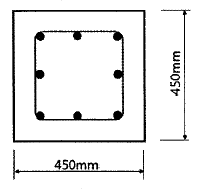
- 2740 kN
- 2952 kN
- 3335 kN
- 3359 kN
(정답률: 58%)
44. 연약한 지반에 대한 대책 중 상부구조의 조치사항으로 옳지 않은 것은?
- 건물의 수평길이를 길게 한다.
- 건물을 경량화 한다.
- 건물의 강성을 높여준다.
- 건물의 인동간격을 멀리한다.
(정답률: 69%)
45. 그림과 같은 단면에서 x축에 대한 단면2차모멘트는?
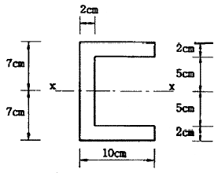
- 1420 cm4
- 1520 cm4
- 1620 cm4
- 1720 cm4
(정답률: 59%)
46. 철골조의 가새에 관한 설명으로 옳지 않은 것은?
- 트러스의 절점 또는 기둥의 절점을 각각 대각선 방향으로 연결하여 구조체의 변형을 방지하는 부재이다.
- 풍하중, 지진력 등의 수평하중에 저항하는 것으로 부재에는 인장응력만 발생한다.
- 보통 단일형강재 또는 조립재를 쓰지만 응력이 작은 지붕가새에는 봉강을 사용한다.
- 수평가새는 지붕트러스의 지붕면(경사면)에 설치한다.
(정답률: 65%)
47. 절점 B에 외력 M=200kN·m가 작용하고 각 부재의 강비가 그림과 같을 경우 MAB는?
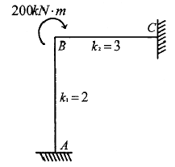
- 20 kN·m
- 40 kN·m
- 60 kN·m
- 80 kN·m
(정답률: 62%)
48. 그림과 같은 모살용접의 유효용접길이는? (단, 유효용접길이는 1면에 대해서만 산정)
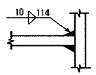
- 10mm
- 94mm
- 107mm
- 114mm
(정답률: 65%)
49. 강구조에서 하중점과 볼트, 접합된 부재의 반력사이에서 지렛대와 같은 거동에 의해 볼트에 작용하는 인장력이 증폭되는 현상을 무엇이라 하는가?
- slip-critical action
- bearing action
- prying action
- buckling action
(정답률: 53%)
50. 다음 그림과 같은 보에서 고정단에 생기는 휨모멘트는?
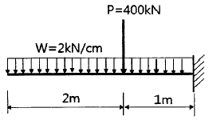
- 500 kN·m
- 900 kN·m
- 1300 kN·m
- 1500 kN·m
(정답률: 53%)
51. 다음 그림과 같은 구조물의 부정정차수로 옳은 것은?
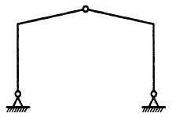
- 정정
- 1차 부정정
- 2차 부정정
- 3차 부정정
(정답률: 62%)
52. 다음과 같은 볼트군의 xo부터의 도심위치 x를 구하면? (단, 그림의 단위는 mm)
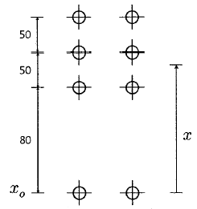
- 80 mm
- 89.5 mm
- 90 mm
- 97.5 mm
(정답률: 53%)
53. 압축이형철근의 정착길이에 관한 기준으로 옳지 않은 것은?
- 계산된 정착길이는 항상 200mm 이상이어야 한다.
- 기본정착길이는 최소 0.043dbfy 이상이어야 한다.
- 해석결과 요구되는 철근량을 초과하여 배치한 경우 (소요철근량/배근철근량)을 곱하여 보정한다.
- 전경량콘크리트를 사용한 경우 기본정착길이에 0.85배하여 정착길이를 산정한다.
(정답률: 51%)
54. 다음 그림과 같은 압축재 H-200×200×8×12가 부재의 중앙지점에서 약축에 대해 휨변형이 구속되어 있다. 이 부재의 탄성좌굴응력도를 구하면? (단, 단면적 A=63.53×102mm2, Ix = 4.72×107mm4, Iy = 1.60×107mm4, E = 2⑤000MPa)
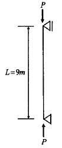
- 252 N/mm2
- 186 N/mm2
- 132 N/mm2
- 108 N/mm2
(정답률: 49%)
55. 철근콘크리트 보에서 콘크리트를 이어붓기 할 때 그 이음의 위치로 가장 적당한 것은?
- 전단력이 최소인 부분
- 휨모멘트가 최소인 부분
- 큰보와 작은보가 접합되는 단면이 변화되는 부분
- 보의 단부
(정답률: 63%)
56. 그림과 같이 양단이 고정된 강재 부재에 온도가 △T=30℃ 증가될 때 이 부재에 발생되는 압축응력은 얼마인가? (단, 강재의 탄성계수 Es=2.0×105MPa, 부재단면적은 5000mm2, 선팽창 계수 α=1.2×10-5/℃이다.)
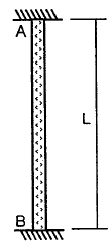
- 25 MPa
- 48 MPa
- 64 MPa
- 72 MPa
(정답률: 45%)
57. 철근콘크리트 보의 장기처짐을 구할 때 적용되는 5년 이상 지속하중에 대한 시간경과계수 ξ의 값은?
- 2.4
- 2.0
- 1.2
- 1.0
(정답률: 73%)
58. 강도설계법에서 휨 또는 휨과 축력을 동시에 받는 부재의 콘크리트 압축연당네서 극한변형률은 얼마로 가정하는가?
- 0.002
- 0.003
- 0.0⑤
- 0.007
(정답률: 69%)
59. 그림과 같은 캔딜레버 보에서 B점의 처짐을 구하면?
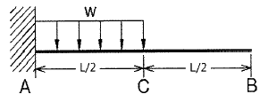
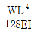
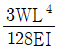
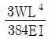
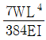
(정답률: 48%)
60. 그림과 같은 구조물에서 기둥에 발생하는 휨모멘트가 0이 되려면 등분포하중 w는?
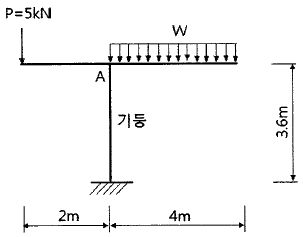
- 2.5 kN/m
- 0.8 kN/m
- 1.25 kN/m
- 1.75 kN/m
(정답률: 51%)
4과목: 건축설비
61. 자동화재탐지설비의 감지기 중 감지기 주위의 온도가 일정한 온도 이상이 되었을 때 작동하는 것은?
- 차동식 감지기
- 정온식 감지기
- 광전식 감지기
- 이온화식 감지기
(정답률: 82%)
62. 급탕설비에 관한 설명으로 옳은 것은?
- 팽창탱크는 반드시 개방식으로 해야 한다.
- 리버스 리턴(reverse-return) 방식은 전 계통의 탕의 순환을 촉진하는 방식이다.
- 직접가열식 중앙급탕법은 보일러 안에 스케일 부착이 없이 내부에 방식처리가 불필요하다.
- 간접가열식 중앙급탕법은 저탕조와 보일러를 직결하여 순환가열하는 것으로 고압용 보일러가 주로 사용된다.
(정답률: 52%)
63. 난방방식에 관한 설명으로 옳지 않은 것은?
- 증기난방은 잠열을 이용한 난방이다.
- 온수난방은 온수의 현열을 이용한 난방이다.
- 온풍난방은 온습도 조절이 가능한 난방이다.
- 복사난방은 열용량이 작으므로 간헐난방에 적합하다.
(정답률: 65%)
64. 알칼리 축전지에 관한 설명으로 옳지 않은 것은?
- 고율방전특성이 좋다.
- 공칭전압은 2[V/셀] 이다.
- 기대수명이 10년 이상이다.
- 부식성의 가스가 발생하지 않는다.
(정답률: 66%)
65. 덕트 설비에 관한 설명으로 옳은 것은?
- 고속덕트에는 소음상자를 사용하지 않는 것이 원칙이다.
- 고속덕트는 관마찰저항을 줄이기 위하여 일반적으로 장방형 덕트를 사용한다.
- 등마찰손실법은 덕트 내의 풍속을 일정하게 유지할 수 있돌고 덕트 치수를 결정하는 방법이다.
- 같은 양의 공기가 덕트를 통해 송풍될 때 풍속을 높게 하면 덕트의 단면치수를 작게 할 수 있다.
(정답률: 54%)
66. 사무소 건물에서 다음과 같이 위생기구를 배치하였을 때 이들 위생기구 전체로부터 배수를 받아들이는 배수수평지관의 관경으로 가장 알맞은 것은?
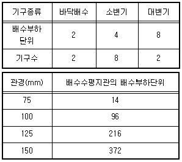
- 75mm
- 100mm
- 125mm
- 150mm
(정답률: 64%)
67. 다음 중 건물 실내에 표면결로 현상이 발생하는 원인과 가장 거리가 먼 것은?
- 실내외 온도차
- 구조재의 열적 특성
- 실내 수증기 발생량 억제
- 생활 습관에 의한 환기 부족
(정답률: 72%)
68. 양수량이 1m3/min, 전양정이 50m인 펌프에서 회전수를 1.2배 증가시켰을 때 양수량은?
- 1.2배 증가
- 1.44배 증가
- 1.73배 증가
- 2.4배 증가
(정답률: 68%)
69. 높이 30m의 고가수조에 매분 1m3의 물을 보내려고 할 때 필요한 펌프의 축동력은? (단, 마찰손실수두 6m, 흡입양정 1.5m, 펌프효율 50%인 경우)
- 약 2.5kW
- 약 9.8kW
- 약 12.3kW
- 약 16.7kW
(정답률: 45%)
70. 전기설비가 어느 정도 유효하게 사용되는가를 나타내며, 최대수용전력에 대한 부하의 평균전력의 비로 표현되는 것은?
- 부하율
- 부등률
- 수용율
- 유효율
(정답률: 62%)
71. 각 층마다 옥내소화전이 3개씩 설치되어 있는 건물에서 옥내소화전설비의 수원의 저수량은 최소 얼마 이상이 되도록 하여야 하는가?(2021년 04월 01일 개정된 기준 적용됨)
- 1.3 m3
- 2.6 m3
- 5.2 m3
- 7.8 m3
(정답률: 51%)
72. 통기방식에 관한 설명으로 옳지 않은 것은?
- 신정통기방식에서는 통기수직관을 설치하지 않는다.
- 루프통기방식은 각 기구의 트랩마다 통기관을 설치하고 각각을 통기 수평지관에 연결하는 방식이다.
- 신정통기방식은 배수수직관의 상부를 연장하여 신정통기관으로 사용하는 방식으로, 대기 중에 개구한다.
- 각개통기방식은 트랩마다 통기되기 때문에 가장 안정도가 높은 방식으로, 자기사이폰 작용의 방지에도 효과가 있다.
(정답률: 47%)
73. 습공기를 가열하였을 경우 상태량이 변하지 않는 것은?
- 엔탈피
- 비체적
- 절대습도
- 상대습도
(정답률: 75%)
74. 어느 점광원에서 1[m] 떨어진 곳의 직각면 조도가 200[lx]일 때, 이 광원에서 2[m] 떨어진 곳의 직각면 조도는?
- 25[lx]
- 50[lx]
- 100[lx]
- 200[lx]
(정답률: 78%)
75. 공기조화방식 중 전수방식에 관한 설명으로 옳지 않은 것은?
- 각 실의 제어가 용이하다.
- 실내 배관에 의한 누수의 우려가 있다.
- 극장의 관객석과 같이 많은 풍량을 필요로 하는 곳에 주로 사용된다.
- 열매체가 증기 또는 냉·온수이므로 열의 운송동력이 공기에 비해 적게 소요된다.
(정답률: 57%)
76. 터보 냉동기에 관한 설명으로 옳지 않은 것은?
- 왕복동식에 비하여 진동이 적다.
- 흡수식에 비해 소음 및 진동이 심하다.
- 임펠러 회전에 의한 원심력으로 냉매가스를 압축한다.
- 일반적으로 대용량에는 부적합하며 비례제어가 불가능하다.
(정답률: 59%)
77. 가스배관 경로 선정 시 주의하여야 할 사항으로 옳지 않은 것은?
- 장래의 증설 및 이설 등을 고려한다.
- 주요구조부를 관통하지 않도록 한다.
- 옥내배관은 매립하는 것을 원칙으로 한다.
- 손상이나 부식 및 전식을 받지 않도록 한다.
(정답률: 76%)
78. 다음과 같은 특징을 갖는 배선 방법은?
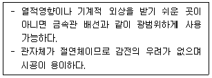
- 금속덕트 배선
- 버스덕트 배선
- 플로어덕트 배선
- 합성수지관 배선
(정답률: 68%)
79. 엘리베이터의 일주시간 구성 요소에 속하지 않는 것은?
- 주행시간
- 도어개폐시간
- 승객출입시간
- 승객대기시간
(정답률: 67%)
80. 다음과 같은 조건에 있는 실의 틈새바람에 의한 현열 부하량은?
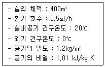
- 986W
- 1124W
- 1347W
- 1542W
(정답률: 62%)
5과목: 건축법규
81. 지구단위계획구역의 지정목적을 이루기 위하여 지구단위계획에 포함될 수 있는 내용이 아닌 것은?
- 용도지역이나 용도지구를 대통령령으로 정하는 범위에서 세부하거나 변경하는 사항
- 건축물 높이의 최고한도 또는 최저한도
- 도시·군관리계획 중 정비사업에 관한 계획
- 대통령령으로 정하는 기반시설의 배치와 규모
(정답률: 50%)
82. 시장·군수·구청장이 국토의 계획 및 이용에 관한 법률에 따른 도시지역에서 건축선을 따로 지정할 수 있는 최대 범위는?
- 2m
- 3m
- 4m
- 6m
(정답률: 44%)
83. 주차전용건축물이란 건축물의 연면적 중 주차장으로 사용되는 부분의 비율이 최소 얼마 이상인 건축물을 말하는가? (단, 주차장 외의 용도로 사용되는 부분이 자동차 관련 시설인 건축물의 경우)
- 70%
- 80%
- 90%
- 95%
(정답률: 67%)
84. 건축물의 면적, 높이 및 층수 등의 산정 방법에 관한 설명으로 옳은 것은?
- 건축물의 높이 산정 시 건축물의 대지에 접하는 전면 도로의 노면에 고저차가 있는 경우에는 그 건축물이 접하는 범위의 전면 도로부분의 수평거리에 따라 가중평균한 높이의 수평면을 전면도로면으로 본다.
- 용적률 산정 시 연면적에는 지하층의 면적과 지상층의 주차용으로 쓰는 면적을 포함시킨다.
- 건축면적은 건축물의 내벽의 중심선으로 둘러싸인 부분의 수평투영면적으로 한다.
- 건축물의 층수는 지하층을 포함하여 산정하는 것이 원칙이다.
(정답률: 55%)
85. 건축물을 건축하는 경우 해당 건축물의 설계자가 국토교통부령으로 정하는 구조기준 등에 따라 그 구조의 안전을 확인할 때, 건축구조기술사의 협력을 받아야 하는 대상 건축물 기준으로 틀린 것은?(문제 오류로 가답안 발표시 4번으로 발표되었지만 확정답안 발표시 모두 정답처리 되었습니다. 여기서는 가답안인 4번을 누르면 정답 처리 됩니다.)
- 다중이용 건축물
- 6층 이상인 건축물
- 3층 이상의 필로티형식 건축물
- 기둥과 기둥 사이의 거리가 20m 이상인 건축물
(정답률: 74%)
86. 대형건축물의 건축허가 사전승인신청 시 제출도서 중 설계설명서에 표시하여야 할 사항에 속하지 않는 것은?
- 시공방법
- 동선계획
- 개략공정계획
- 각부 구조계힉
(정답률: 65%)
87. 비상용승강기의 승강장 및 승강로 구조에 관한 기준 내용으로 틀린 것은?
- 옥내 승강장의 바닥면적은 비상용승강기 1대에 대하여 6m2 이상으로 한다.
- 각 층으로부터 피난층까지 이르는 승강로를 단일구조로 연결하여 설치하여야 한다.
- 피난층이 있는 승강장의 출입구로부터 도로 또는 공지에 이르는 거리는 30m 이하로 한다.
- 승강장에는 배연설비를 설치하여야 하며, 외부를 향하여 열 수 있는 창문 등을 설치하여서는 안 된다.
(정답률: 69%)
88. 국토의 계획 및 이용에 관한 법령상 다음과 같이 정의되는 용어는?
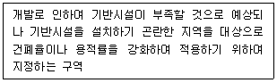
- 시가화조정구역
- 개발밀도관리구역
- 기반시설부담구역
- 지구단위계획구역
(정답률: 65%)
89. 다음 중 방화구조의 기준으로 틀린 것은?
- 시멘트모르타르 위에 타일을 붙인 것으로서 그 두께의 합계가 2.5cm 이상인 것
- 석고판 위에 회반죽을 반른 것을서 그 두께의 합계가 2.5cm 이상인 것
- 철망모르타르로서 그 바름두께가 1.5cm 이상인 것
- 심벽에 흙으로 맞벽치기한 것
(정답률: 53%)
90. 부설주차장의 설치대상 시설물 종류와 설치기준의 연결이 옳은 것은?
- 판매시설 – 시설면적 100m2당 1대
- 위락시설 – 시설면적 150m2당 1대
- 종교시설 – 시설면적 200m2당 1대
- 숙박시설 – 시설면적 200m2당 1대
(정답률: 57%)
91. 다음은 건축법령상 지하층의 정의 내용이다. ( )안에 알맞은 것은?
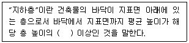
- 2분의 1
- 3분의 1
- 3분의 2
- 4분의 3
(정답률: 76%)
92. 오피스텔에 설치하는 복도의 유효너비는 최소 얼마 이상이어야 하는가? (단, 건축물의 연면적은 300제곱미터이며, 양옆에 거실이 있는 복도의 경우이다.)
- 1.2m
- 1.8m
- 2.4m
- 2.7m
(정답률: 63%)
93. 광역도시계획에 관한 내용으로 틀린 것은?
- 인접한 둘 이상의 특별시·광역시·특별자치시·특별자치도·시 또는 군의 관할 구역 전부 또는 일부를 광역계획권으로 지정할 수 있다.
- 군수가 광역도시계획을 수립하는 경우 도지사의 승인을 생략한다.
- 광역계획권의 공간 구조와 기능 분담에 관한 정책 방향이 포함되어야 한다.
- 광역도시계획을 공동으로 수립하는 시·도지사는 그 내용에 관하여 서로 협의가 되지 아니하면 공동이나 단독으로 국토교통부장관에게 조정을 신청할 수 있다.
(정답률: 64%)
94. 다음 중 건축물의 용도 분류가 옳은 것은?
- 식물원 – 동물 및 식물관련시설
- 동물병원 - 의료시설
- 유스호스텔 - 수련시설
- 장례식장 – 묘지관련시설
(정답률: 66%)
95. 다음 중 국토의 계획 및 이용에 관한 법령상 공공(公共)시설에 속하지 않는 것은?
- 광장
- 공동구
- 유원지
- 사방설비
(정답률: 53%)
96. 태양열을 주된 에너지원으로 이용하는 주택의 건축면적 산정 시 이용하는 중심선의 기준으로 옳은 것은?
- 건축물의 외벽 경계선
- 건축물 기둥 사이의 중심선
- 건축물의 외벽 중 내측 내력벽의 중심선
- 건축물의 외벽 중 외측 내력벽의 중심선
(정답률: 75%)
97. 다음의 대지와 도로의 관계에 관한 기준 내용 중 ( ) 안에 알맞은 것은?
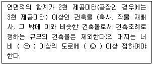
- ㉠ : 4m, ㉡ : 2m
- ㉠ : 6m, ㉡ : 4m
- ㉠ : 8m, ㉡ : 6m
- ㉠ : 8m, ㉡ : 4m
(정답률: 72%)
98. 다음 방화구획의 설치에 관한 기준을 적용하지 아니하거나 그 사용에 지장이 없는 범위에서 완하하여 적용할 수 있는 건축물의 부분에 해당되지 않는 것은?
- 복층형 공동주택의 세대별 층간 바닥 부분
- 주요구조부가 내화구조 또는 불연재료로 된 주차장
- 계단실 부분·복도 또는 승강기의 승강로 부분으로서 그 건축물의 다른 부분과 방화구획으로 구획된 부분
- 문화 및 집회시설 중 동물원의 용도로 쓰는 거실로서 시선 및 활동공간의 확보를 위하여 불가피한 부분
(정답률: 51%)
99. 오피스텔의 난방설비를 개별난방방식으로 하는 경우에 관한 기준 내용으로 틀린 것은?
- 보일러의 연도는 내화구조로서 공동연도로 설치할 것
- 보일러는 거실 외의 곳에 설치할 것
- 보일러실의 윗부분에는 그 면적이 0.5m2 이상인 환기창을 설치할 것
- 기름보일러를 설치하는 경우에는 기름저장소를 보일러실에 설치할 것
(정답률: 73%)
100. 주요구조부가 내화구조 또는 불연재료로 된 층수가 16층 이상인 공동주택의 경우, 피난층 외의 층에서는 피난층 또는 지상으로 통하는 직통 계단을 거실의 각 부분으로부터 계단에 이르는 보행 거리가 최대 얼마 이하가 되도록 설치하여야 하는가? (단, 계단은 거실로부터 가장 가까운 거리에 있는 1개소의 계단을 말한다.)
- 30m
- 40m
- 50m
- 75m
(정답률: 41%)